Orange3는 코드를 쓰지 않고 끌어다 놓기(드래그 앤 드롭)만으로 데이터를 분석하는 도구입니다. 표를 고치고, 그래프를 그리고, 머신러닝 모델까지 만들 수 있습니다.
오늘은 수학 원리를 모두 파헤치기보다 입력 → 처리 → 출력을 직접 경험해 보면서, 머신러닝이 얼마나 쓸모 있는 도구인지 빠르게 살펴봅니다.
우리 생활에서 '데이터를 보고 앞으로를 예측'하는 경우를 하나 떠올려 써 봅시다. (예: 날씨에 따라 아이스크림을 얼마나 준비할까?)
orangedatamining.com에 들어가 위쪽 메뉴의 Download를 누릅니다.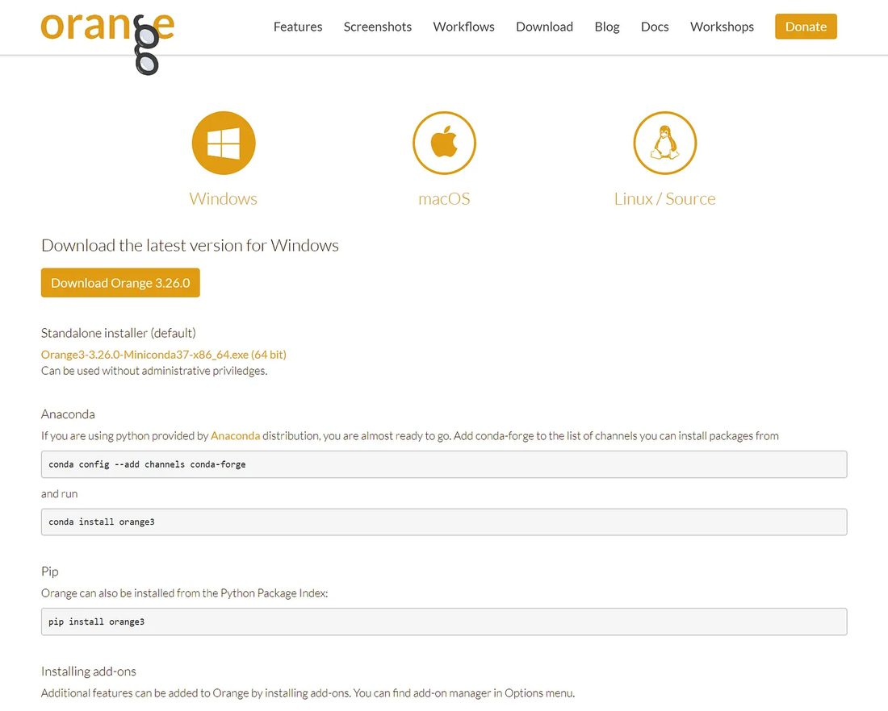
pip install orange3로도 설치할 수 있습니다.내가 마친 단계에 체크해 봅시다.
1 위젯 팔레트: 기능 상자(위젯)가 종류별로 모여 있습니다.
2 캔버스: 위젯을 끌어다 놓고 작업 흐름을 만드는 곳입니다.
3 연결선: 위젯 오른쪽의 회색 곡선 부분을 끌어서 빈 곳에 놓으면 이어 붙일 위젯 목록이 뜹니다. 선 위의 글자는 무엇이 전달되는지 알려 줍니다.
위젯 묶음과 하는 일을 알맞게 연결해 봅시다.
레모네이드 가게의 5일 동안의 기록입니다. 날마다 날짜, 요일, 온도, 판매량, 가게 문을 연 시간을 적었습니다.
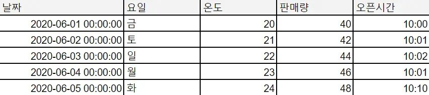
https://gus-wn.github.io/orange3_mintea/data/lemonade.csv 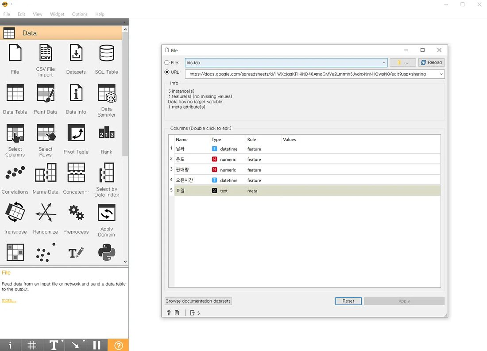
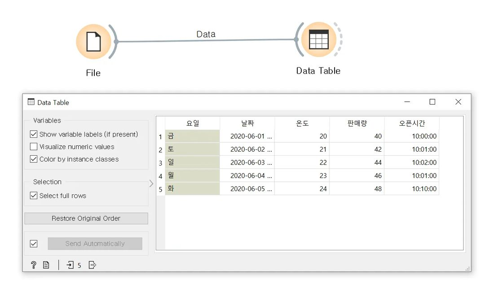
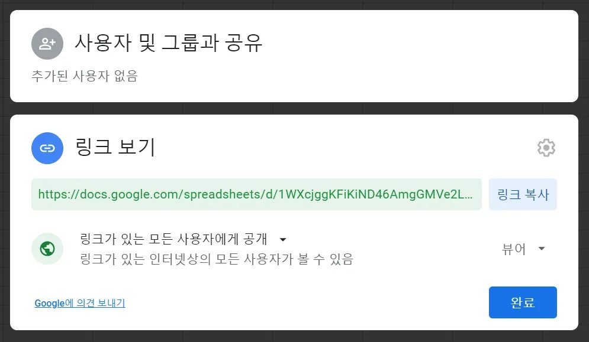
Data Table을 보고 빈칸을 채워 봅시다.
이 데이터는 개의 행(날)과 개의 열로 되어 있다. 온도가 1도 오를 때마다 판매량은 개씩 늘었다.
판매량 · is below · 44로 정합니다. (판매량이 44 미만인 날)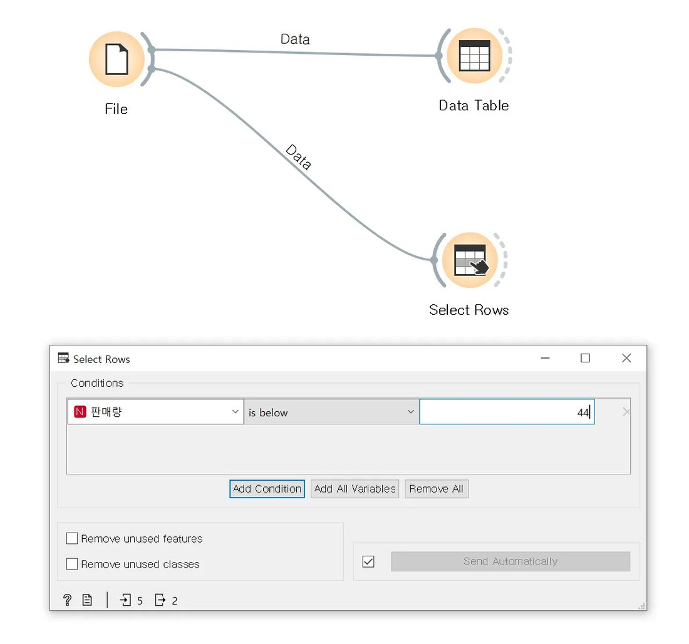
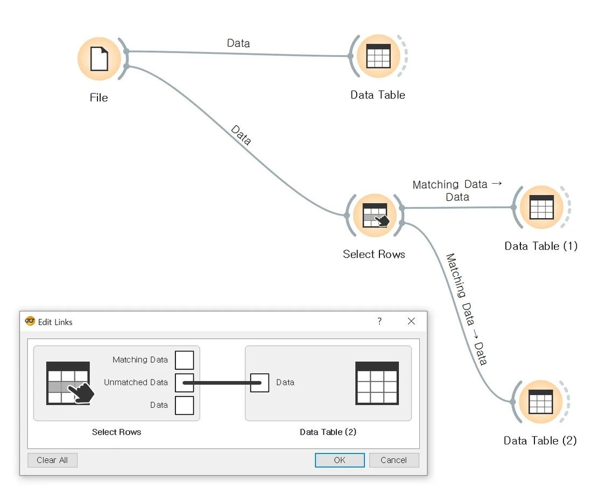
Select Rows 결과를 적어 봅시다.
조건에 맞는 행(Matching Data)은 개, 걸러진 행(Unmatched Data)은 개이다.
Select Columns를 열면 왼쪽(Available Variables)은 숨길 열, 오른쪽(Features)은 보일 열입니다. 보고 싶은 열을 오른쪽으로, 보고 싶지 않은 열을 왼쪽으로 옮깁니다.
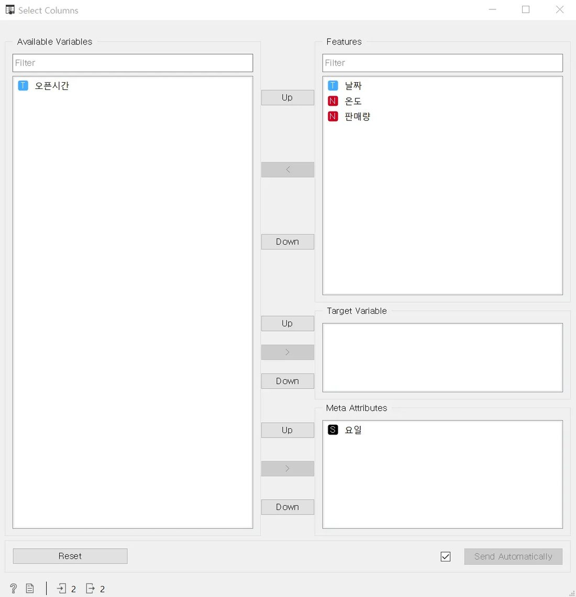
레모네이드 한 잔이 5,000원이라면 하루 매출은 얼마일까요? Feature Constructor에서 New → Numeric을 고르고, 이름을 매출, 식을 판매량*5000으로 적은 뒤 Send를 누릅니다. 뒤에 Data Table을 연결하면 매출 열이 생긴 것을 볼 수 있습니다.
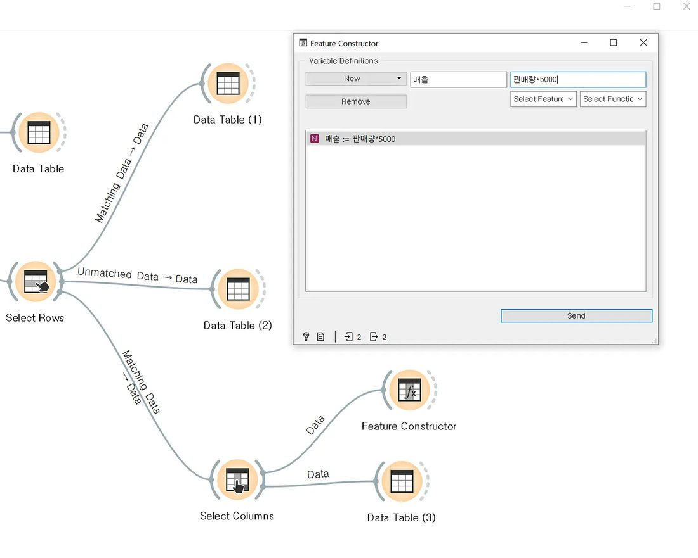
판매량이 46인 날의 매출은 얼마일까요?
원
대푯값은 데이터 전체를 숫자 하나로 나타낸 값입니다. 평균(모두 더해 개수로 나눈 값), 중앙값(크기 순으로 세웠을 때 가운데 값), 최빈값(가장 많이 나온 값)이 있습니다.
하지만 대푯값만으로는 데이터가 어떻게 퍼져 있는지(분포)를 알 수 없습니다. 학생이 2명뿐인 두 반이 있는데, 1반은 100점과 0점, 2반은 50점과 50점이라면 평균은 둘 다 50점이지만 모습은 전혀 다릅니다. 이 차이를 보려고 사분위수, 분산, 표준편차를 씁니다.
다음 판매량 데이터의 대푯값을 구해 봅시다. 30, 42, 43, 47, 58
평균 중앙값
판매량을 고릅니다.https://gus-wn.github.io/orange3_mintea/data/lemonade2.csv 44 ± 2.8은 평균과 표준편차, 노란 선은 중앙값입니다.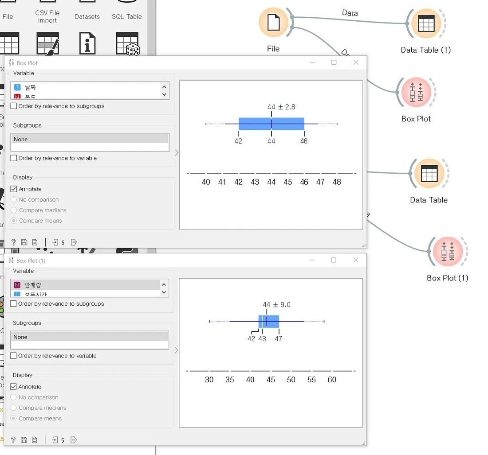
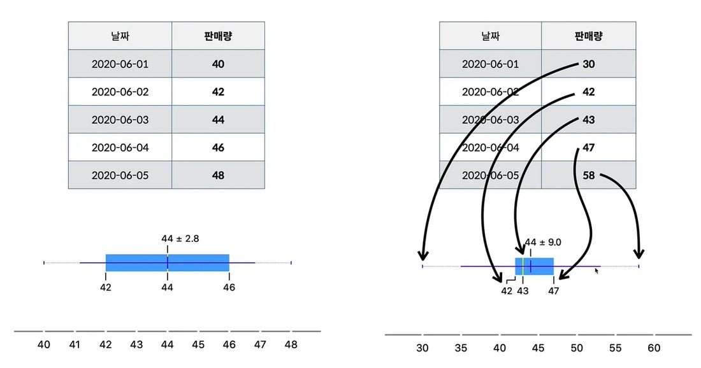
두 데이터는 평균이 44로 같습니다. 상자 그림에서 무엇이 달랐나요? 레모네이드 가게 주인이라면 어느 쪽이 재료를 준비하기 쉬울지도 함께 써 봅시다.
File에 Scatter Plot을 연결하고 x축을 온도, y축을 판매량으로 바꿔 봅니다. 산점도로는 두 값의 관계, 다른 점들과 동떨어진 이상치, 점이 모여 있는 군집을 볼 수 있습니다.
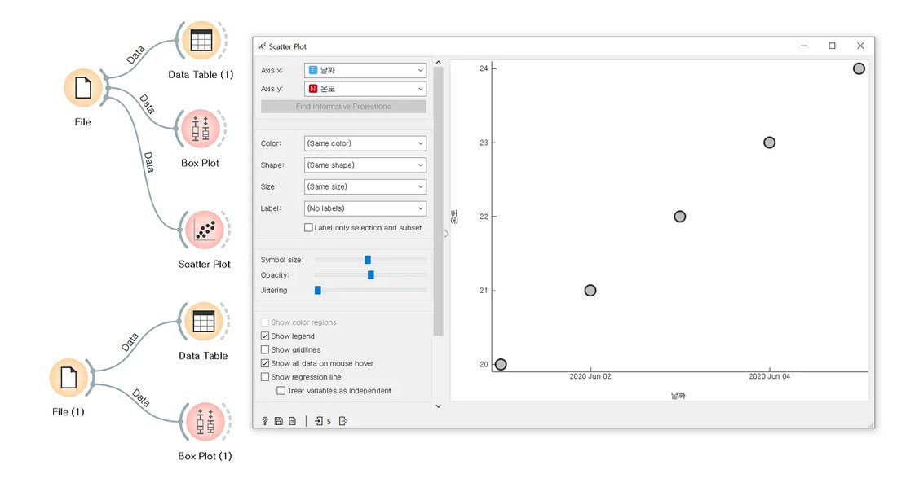
온도와 판매량을 산점도로 그리면 점들이 어떤 모양으로 놓이나요?
원인이 되는 값을 독립변수, 결과가 되는 값을 종속변수라고 합니다. 이미 있는 원인과 결과로 규칙을 배우게 한 뒤, 새로운 원인만 주고 결과를 맞히게 하는 것이 머신러닝의 지도학습입니다. 결과가 숫자이면 회귀라고 부릅니다.
오렌지3에서는 File 위젯의 Columns에서 각 열의 Role(역할)을 정합니다.
Role과 뜻을 알맞게 연결해 봅시다.
날짜 meta, 온도 feature, 판매량 target, 오픈시간·요일 skip으로 바꿉니다.https://gus-wn.github.io/orange3_mintea/data/lemonade-new.csv 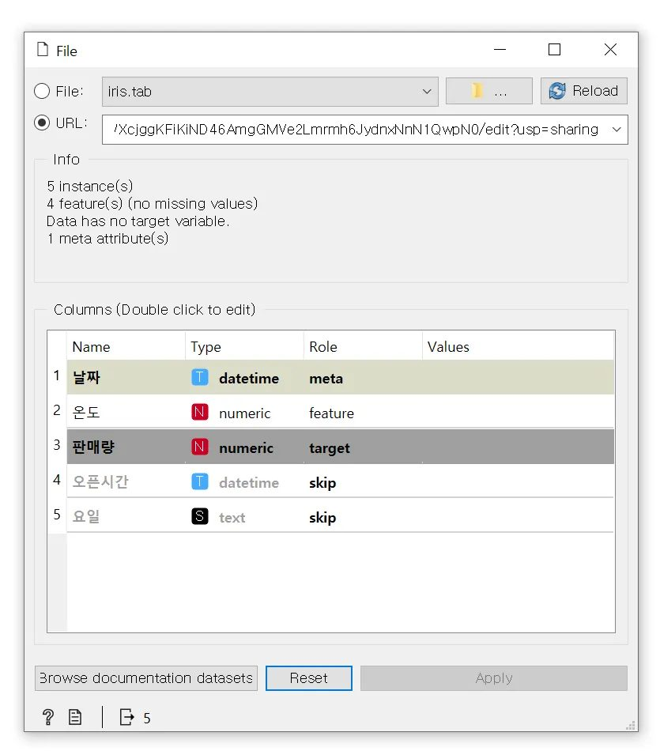
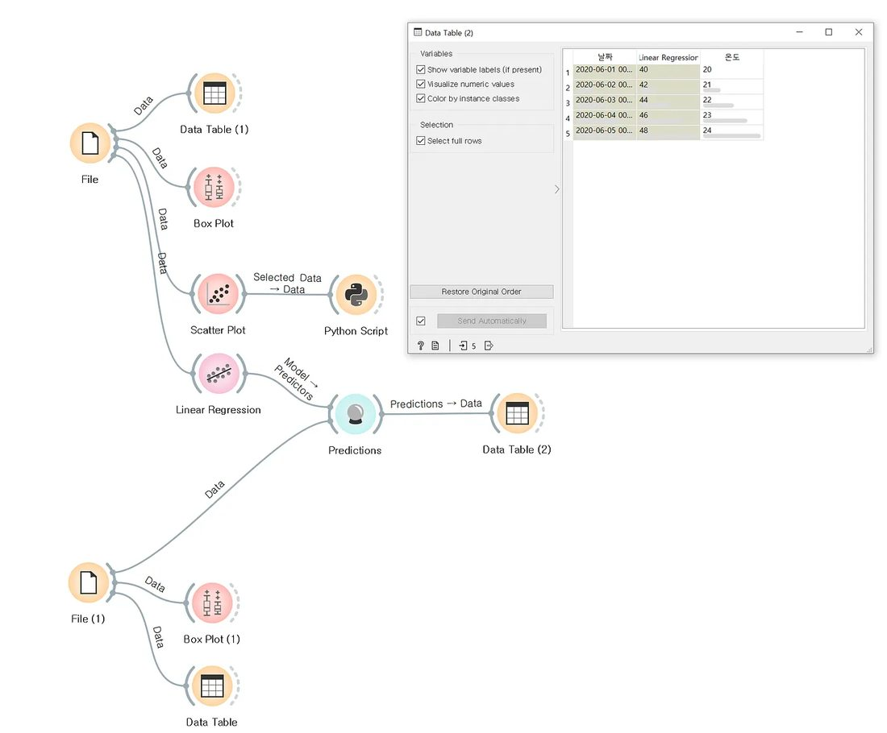
Predictions 결과를 적어 봅시다.
| 온도 | 예측한 판매량 |
|---|---|
| 25도 | |
| 28도 | |
| 30도 |
온도가 40도인 날에도 이 모델의 예측을 믿을 수 있을까요? 이유와 함께 써 봅시다.
오늘은 표를 고르고 고치기(Select Rows, Select Columns, Feature Constructor), 통계와 그래프(Box Plot, Scatter Plot), 예측(Linear Regression, Predictions)을 모두 위젯 연결만으로 해 보았습니다. 1번 학습지에서는 같은 방법으로 실제 한국인 소득 데이터를 예측합니다.
오늘 활동을 입력 · 처리 · 출력으로 나눠 정리해 봅시다.
해당하는 만큼 별을 눌러 봅시다.